Cutlery, serving spoons & knives in Kenya
Cutlery, serving spoons and knives in Kenya: stainless table spoons and forks by the 6, soup ladles, rice serving spoons, egg turners, mandazi spoons, spaghetti spoons, melamine serving spoons, gold table spoons, gold spoon holders, 24 piece gold cutlery sets with stand, Feng kitchen knives, AIFEL butcher knives, bread knives, Kunsion marble knife sets with stand, wire web spoons for mandazi and chips, butcher knives and 24 piece cutlery sets, delivered in Nairobi.
Open cutlery, serving spoons & knives in the shopCutlery sets · Spoons & forks · Serving spoons & ladles · Spoon & cutlery holders · Kitchen & butcher knives
Cutlery sets (2)
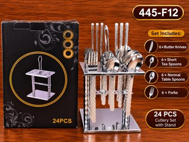
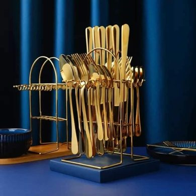
Spoons & forks (4)
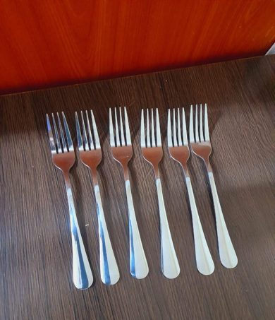
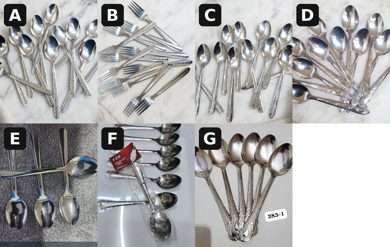
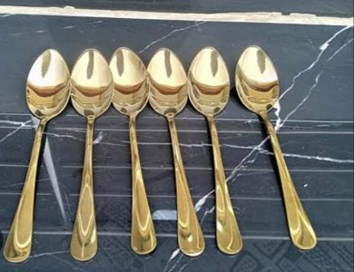
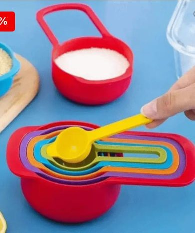
Serving spoons & ladles (6)
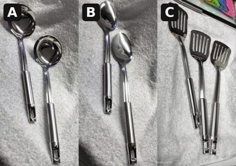
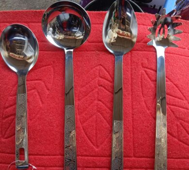


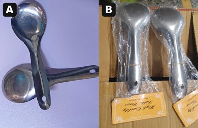
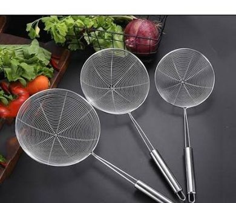
Spoon & cutlery holders (1)
Kitchen & butcher knives (5)
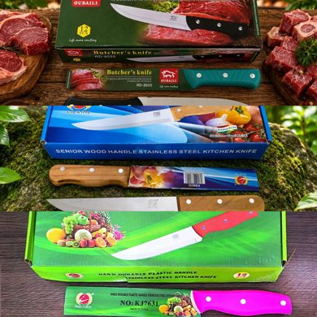
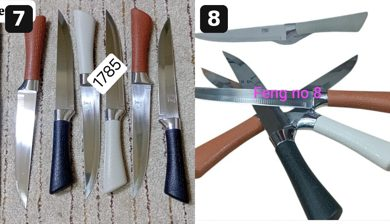
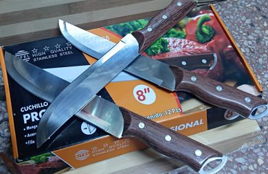
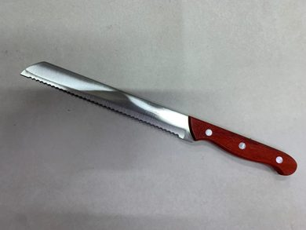
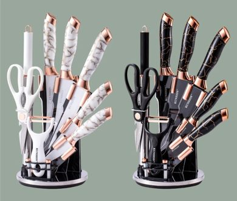